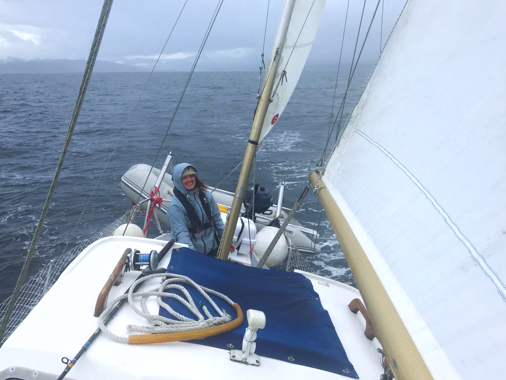

It’s me, hi!


Welcome to my personal page. Introductions aren’t my strong point, but I usually start by telling people I’m Irish, a researcher, occasional sailor and aspiring powerlifter.
Over the years, I’ve dabbled in-and-out of different things in a bid to keep myself entertained. I hold a MA (Honors) in Psychology at the University of Edinburgh, a Research Masters in Methodology & Statistics at Utrecht University, and worked as a statistician and (clinical) psychologist in-between these endeavors.
I am currently a PhD Candidate in Child and Adolescent Psychology/Psychiatry at Erasmus Medical Centre in Rotterdam. I am just at the beginning, but in 4 years time I hope to have an interesting and useful thesis about early identification of mental health problems in young people. We are using Experience Sampling Methods to track the mood and behaviour of children and adolescents throughout their day, to model risk and resilience for developing problems. My PhD is a one part of a wider flagship effort known as PROTECt Me, funded by Convergence Health and Technology. I am also a member of the Stress-in-Action Consortium.
That’s not everything, but you can see more of this stuff on my CV.
Interests
- Methods and statistics
- Clinical and health psychology
- Survey research and big data
- EMA and longitudinal data
Skills
- R
- SAS
- JASP and SPSS
- Python
Consultation
I am available for statistical consultations. I have a particular interest in teaching or in psychological and health research, but this is not necessary for me to help you! Please get in touch by email if you would like some help.